前言 方式一： Spring Boot Actuator + Micrometer + Prometheus + Grafana
方式二： Spring Boot Actuator + Spring Boot Admin
方式一 Micrometer + Prometheus + Grafana pom.xml
1 2 3 4 5 6 7 8 <dependency > <groupId > org.springframework.boot</groupId > <artifactId > spring-boot-starter-actuator</artifactId > </dependency > <dependency > <groupId > io.micrometer</groupId > <artifactId > micrometer-registry-prometheus</artifactId > </dependency >
如果使用了Spring Security等权限框架需要放开
1 web.ignoring().antMatchers("/actuator" , "/actuator/**" );
1 2 3 4 5 6 7 8 management: endpoints: web: exposure: include: 'prometheus' metrics: tags: application: ${spring.application.name}
浏览器测试
1 http://localhost:8080/actuator/prometheus
Prometheus Prometheus是一款开源的监控 + 时序数据库 + 报警软件
Prometheus官网 下载，或者访问docker 进行安装
1 2 3 4 5 docker pull prom/statsd-exporter docker run -d -p 9090:9090 \ -v $(pwd)/prometheus.yml:/etc/prometheus/prometheus.yml \ prom/prometheus --config.file=/etc/prometheus/prometheus.yml
需编写prometheus.yml
新增
1 2 3 4 5 6 7 scrape_configs: - job_name: 'springboot' scrape_interval: 15s scrape_timeout: 10s metrics_path: '/actuator/prometheus' static_configs: - targets: ['localhost:8080' ]
如果不是采用的docker方式，直接找到安装目录下的prometheus.yml，在scrape_configs新增
1 2 3 4 5 6 7 8 scrape_configs: - job_name: 'springboot' metrics_path: '/actuator/prometheus' static_configs: - targets: ['localhost:8080' ]
targets对应需要监控的服务地址
浏览器访问测试
至此，已经用Prometheus实现了监控数据的可视化，然而使用体验并不好。下面来用Grafana实现更友好、更贴近生产的监控可视化。
grafana Grafana是一个开源的跨平台度量分析和可视化 + 告警工具
grafana
使用docker安装
1 docker run -d --name=grafana -p 3000:3000 grafana/grafana
Windows的话下载zip或者安装包直接安装即可
登录：访问 http://localhost:3000 ，初始账号/密码为：admin/admin
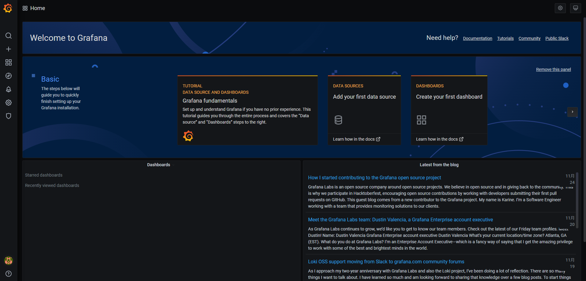
绑定Prometheus 左侧菜单选择Configuration-datasources-Add data source
添加Prometheus地址
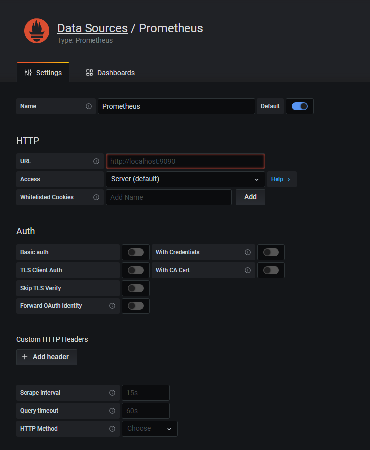
点击 save&test，测试成功即可
创建监控Dashboard 左侧菜单选择+Create-Import，输入id为4701 ，这个是为Micrometer提供的增强包。有兴趣可以前往 Grafana Lab - Dashboards ，输入关键词即可搜索指定Dashboard, 详情页的右上角找到id
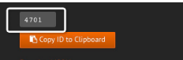
比较好用的Dashboard
JVM (Micrometer)
JVM (Actuator)
Spring Boot Statistic
注意是以 Prometheus 作为数据源，支持Micrometer的Dashboard
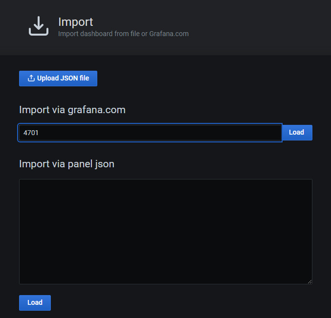
点击右侧load后，选择prometheus，确认后import
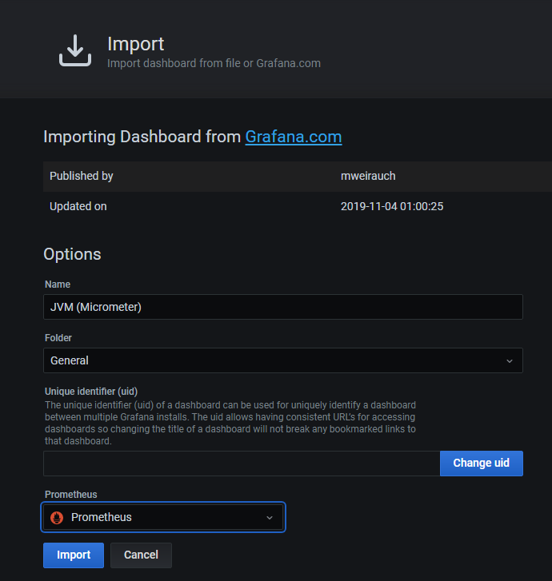
如果选择项是空的，注意是否开启了prometheus
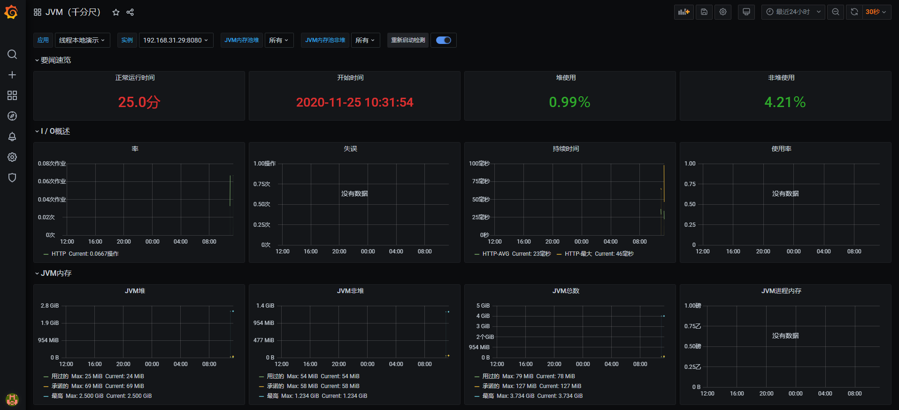
可查看监控的服务jvm等情况
告警 Grafana支持的告警渠道非常丰富，例如邮件、钉钉、Slack、Webhook等，有兴趣可以了解下
方式二 Spring Boot Admin Spring Boot Admin 是一个开源社区项目，用于管理和监控SpringBoot应用程序。 应用程序作为Spring Boot Admin Client向为Spring Boot Admin Server注册（通过HTTP）或使用SpringCloud注册中心（例如Eureka，Consul）发现。 UI是的AngularJs应用程序，展示Spring Boot Admin Client的Actuator端点上的一些监控。
搭建 创建两个SpringBoot项目，一个作为监控端(admin-server-demo)，一个作为被监控端(admin-client-demo)
server端 pom.xml
1 2 3 4 5 6 7 8 9 10 11 12 13 14 15 16 17 18 19 20 21 22 23 24 25 26 27 28 29 30 31 32 33 34 35 36 37 38 39 40 41 42 43 44 45 46 47 48 49 50 51 52 53 54 55 56 57 58 59 60 61 62 63 64 65 66 <?xml version="1.0" encoding="UTF-8" ?> <project xmlns ="http://maven.apache.org/POM/4.0.0" xmlns:xsi ="http://www.w3.org/2001/XMLSchema-instance" xsi:schemaLocation ="http://maven.apache.org/POM/4.0.0 https://maven.apache.org/xsd/maven-4.0.0.xsd" > <modelVersion > 4.0.0</modelVersion > <parent > <groupId > org.springframework.boot</groupId > <artifactId > spring-boot-starter-parent</artifactId > <version > 2.4.0</version > <relativePath /> </parent > <groupId > com.jonesun</groupId > <artifactId > admindemo</artifactId > <version > 0.0.1-SNAPSHOT</version > <name > admin-server-demo</name > <description > Demo project for Spring Boot</description > <properties > <java.version > 14</java.version > <spring-boot-admin.version > 2.3.1</spring-boot-admin.version > </properties > <dependencies > <dependency > <groupId > org.springframework.boot</groupId > <artifactId > spring-boot-starter-web</artifactId > </dependency > <dependency > <groupId > de.codecentric</groupId > <artifactId > spring-boot-admin-starter-server</artifactId > </dependency > <dependency > <groupId > org.springframework.boot</groupId > <artifactId > spring-boot-starter-mail</artifactId > </dependency > <dependency > <groupId > org.springframework.boot</groupId > <artifactId > spring-boot-starter-test</artifactId > <scope > test</scope > </dependency > </dependencies > <dependencyManagement > <dependencies > <dependency > <groupId > de.codecentric</groupId > <artifactId > spring-boot-admin-dependencies</artifactId > <version > ${spring-boot-admin.version}</version > <type > pom</type > <scope > import</scope > </dependency > </dependencies > </dependencyManagement > <build > <plugins > <plugin > <groupId > org.springframework.boot</groupId > <artifactId > spring-boot-maven-plugin</artifactId > </plugin > </plugins > </build > </project >
application.yml
1 2 3 4 5 6 7 8 9 10 11 12 13 14 15 16 17 18 19 20 21 22 23 24 server: port: 8001 spring: application: name: admin-server boot: admin: notify: mail: to: xxx@163.com enabled: true cc: 111 @163.com,222@163.com from: xxx<aaa@163.com> mail: host: smtp.163.com username: aaa@163.com default-encoding: utf-8 password: xxxxxx
QQ、163等邮箱需要设置授权码，password填生成好的授权码，如果不需要邮件告警，去除mail相关配置即可
AdminServerDemoApplication.java
1 2 3 4 5 6 7 8 9 10 @EnableAdminServer @SpringBootApplication public class AdminServerDemoApplication { public static void main (String[] args) { SpringApplication.run(AdminServerDemoApplication.class, args); } }
注意，一定要加上@EnableAdminServer
client端 新建Spring Boot项目
pom.xml
1 2 3 4 5 6 7 8 9 10 11 12 13 14 15 16 17 18 19 20 21 22 23 24 25 26 27 28 29 30 31 32 33 34 35 36 37 38 39 40 41 42 43 44 45 46 47 48 49 50 51 52 53 54 55 56 57 58 59 60 61 62 63 64 65 <?xml version="1.0" encoding="UTF-8" ?> <project xmlns ="http://maven.apache.org/POM/4.0.0" xmlns:xsi ="http://www.w3.org/2001/XMLSchema-instance" xsi:schemaLocation ="http://maven.apache.org/POM/4.0.0 https://maven.apache.org/xsd/maven-4.0.0.xsd" > <modelVersion > 4.0.0</modelVersion > <parent > <groupId > org.springframework.boot</groupId > <artifactId > spring-boot-starter-parent</artifactId > <version > 2.4.0</version > <relativePath /> </parent > <groupId > com.jonesun</groupId > <artifactId > admin-client-demo</artifactId > <version > 0.0.1-SNAPSHOT</version > <name > admin-client-demo</name > <description > Demo project for Spring Boot</description > <properties > <java.version > 14</java.version > <spring-boot-admin.version > 2.3.1</spring-boot-admin.version > </properties > <dependencies > <dependency > <groupId > org.springframework.boot</groupId > <artifactId > spring-boot-starter-web</artifactId > </dependency > <dependency > <groupId > org.springframework.boot</groupId > <artifactId > spring-boot-starter-actuator</artifactId > </dependency > <dependency > <groupId > de.codecentric</groupId > <artifactId > spring-boot-admin-starter-client</artifactId > </dependency > <dependency > <groupId > org.springframework.boot</groupId > <artifactId > spring-boot-starter-test</artifactId > <scope > test</scope > </dependency > </dependencies > <dependencyManagement > <dependencies > <dependency > <groupId > de.codecentric</groupId > <artifactId > spring-boot-admin-dependencies</artifactId > <version > ${spring-boot-admin.version}</version > <type > pom</type > <scope > import</scope > </dependency > </dependencies > </dependencyManagement > <build > <plugins > <plugin > <groupId > org.springframework.boot</groupId > <artifactId > spring-boot-maven-plugin</artifactId > </plugin > </plugins > </build > </project >
application.yml
1 2 3 4 5 6 7 8 9 10 11 12 13 14 15 16 17 18 19 20 21 22 23 24 spring: application: name: admin-client boot: admin: client: url: http://localhost:8001 instance: service-url: http://127.0.0.1:8002 prefer-ip: true name: cts-vivo-preview server: port: 8002 management: endpoints: web: exposure: include: '*' endpoint: health: show-details: ALWAYS
运行验证 分别启动两个服务，然后浏览器中打开server端的网址: http://localhost:8001/
即可查看监控信息，和服务的详细情况
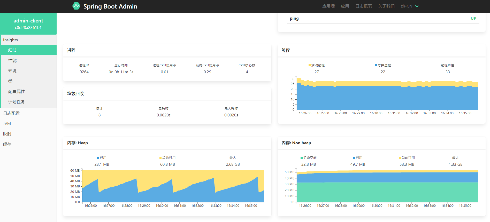
如果存在Spring Security，则需要添加自定义安全配置，以允许对端点进行未经身份验证的访问
1 2 3 4 5 6 7 8 9 10 @Configuration public class ActuatorSecurity extends WebSecurityConfigurerAdapter { @Override protected void configure(HttpSecurity http) throws Exception { http.requestMatcher(EndpointRequest.toAnyEndpoint()).authorizeRequests() .anyRequest().permitAll() } }
查看日志 如果想在admin-server中查看client的日志，则需在client的application.yml中加入配置：
1 2 3 4 5 6 logging: pattern: file: "%clr(%d{yyyy-MM-dd HH:mm:ss.SSS}){faint} %clr(%5p) %clr(${PID}){magenta} %clr(---){faint} %clr([%15.15t]){faint} %clr(%-40.40logger{39}){cyan} %clr(:){faint} %m%n%wEx" file: name: C:/tmp/admin-client/spring-log.log
注意logging.file.name不支持表达式，所以项目中无论是使用默认logback还是log4j2，都需要匹配好日志路径及名称。如果需要配置相对路径则可配置为./log/xxx.log，表示为项目所在目录下的log文件夹中的xxx.log文件
这样就可以在admin-server中查看日志,无需登录到服务器上查看了，甚至可以利用日志配置，在线实时调整日志的显示级别(内部原理也是actuator)，方便在出现异常情况下查看详细的日志打印
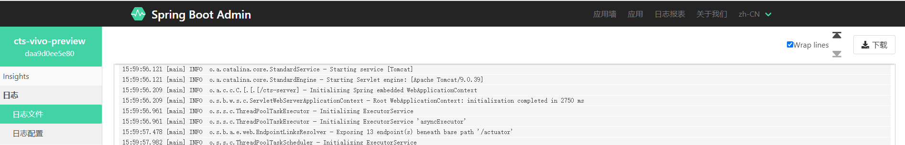
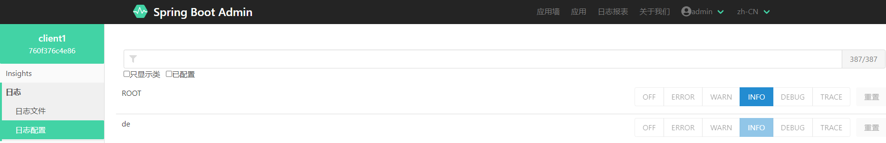
告警 结合spring-boot-starter-mail(admin-server中配置)进行告警，主要是Spring Boot Actuator的使用，这里举个例子：
当服务器中的磁盘容量不足5GB时，进行邮件告警
修改client-server中的application.yml
1 2 3 4 5 6 7 8 9 10 11 12 13 14 15 16 management: endpoints: web: exposure: include: '*' exclude: env,beans jmx: exposure: include: health,info endpoint: health: show-details: ALWAYS health: diskspace: threshold: 5GB
实际项目中肯定不能将所有endpoint 都暴露，根据项目自己调整
这边我们设置diskspace的阈值为5GB, 即如果运行环境的磁盘容量不足5GB时进行告警(本地测试的话为看到邮件通知可调整为较大的数值如150GB)
重新启动项目后, 就会收到邮件通知，并且admin-server中对应的diskspace状态会为DOWN
权限验证 当使用Spring Boot Actuator和Spring Boot Admin, 实际项目中肯定不能直接暴露到让人随意访问，这里我们加入Spring Security
pom.xml中加入
1 2 3 4 <dependency > <groupId > org.springframework.boot</groupId > <artifactId > spring-boot-starter-security</artifactId > </dependency >
application.yml中加入测试账户(实际项目中可结合数据库进行配合)，不过一般项目写死也可以，毕竟服务器配置一般不会外传
1 2 3 4 5 spring: security: user: name: admin password: admin123
加入权限配置SecurityConfig：
1 2 3 4 5 6 7 8 9 10 11 12 13 14 15 16 17 18 19 20 21 22 23 24 25 @Configuration public class SecurityConfig extends WebSecurityConfigurerAdapter { private final String contextPath; public SecurityConfig (AdminServerProperties adminServerProperties) { this .contextPath = adminServerProperties.getContextPath(); } @Override protected void configure (HttpSecurity http) throws Exception { http.csrf().csrfTokenRepository(CookieCsrfTokenRepository.withHttpOnlyFalse()) .ignoringAntMatchers(contextPath + "/instances" ); http.authorizeRequests().anyRequest().authenticated(); http.formLogin().loginPage("/login" ).permitAll(); http.logout().logoutUrl("/logout" ).logoutSuccessUrl("/login" ); http.httpBasic(); } }
application.yml中加入配置
1 2 3 4 5 6 spring: boot: admin: client: username: admin password: admin123
分别重启两个项目，浏览器访问admin-server，可以发现需要登录才可以查看
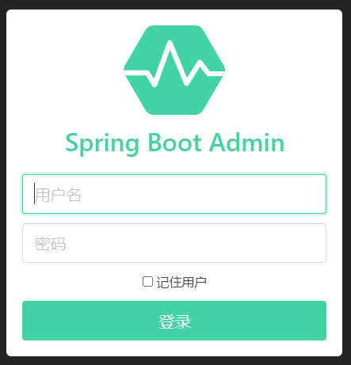
如果client-server也使用了security
则首先需支持HTTP BASIC 方式访问端点(默认是支持的)，然后将元数据提供给admin-server
client-server中application.yml加入:
1 2 3 4 5 6 7 8 spring: boot: admin: client: instance: metadata: user.name: ${spring.security.user.name} user.password: ${spring.security.user.password}
如果不支持的话，则可以定制 HttpHeadersProvider来达到效果
示例源码
admin-server
client-server
Spring Cloud下的应用 集成了Spring Cloud Discovery (如eureka)到应用程序后，则不需要 Spring Boot Admin 客户端。
示例源码
eureka-server
eureka-client-with-admin-server
eureka-client
与Spring Boot Admin类似的还有Apache Skywalking 利用的java agent， 可以监控任意的java应用，感兴趣可以了解下
常见问题
监控页面对应信息一栏显示: 未提供任何信息，需要使用spring-boot的插件，运行spring-boot:build-info，生成Actuator使用的构建信息文件build-info.properties, 再次运行就可以看到了
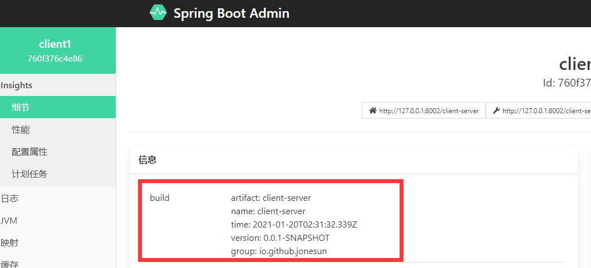
或者在application.yml中加入:
1 2 3 4 5 6 7 8 info: version: @project.version@ name: @project.artifactId@ group: @project.groupId@ description: @project.description@ author: jone sun blog: https://jonesun.github.io/
如果运行后出现类似:
1 2 3 4 org.yaml.snakeyaml.scanner.ScannerException: while scanning for the next token found character '@' that cannot start any token. (Do not use @ for indentation) in 'reader', line 39, column 12: version: @project.version@
错误，先检查下pom.xml中是否存在对应值，尤其有些项目没有写description，再在build标签下新增:
1 2 3 4 5 6 7 <resources > <resource > <directory > src/main/resources</directory > <filtering > true</filtering > </resource > </resources >